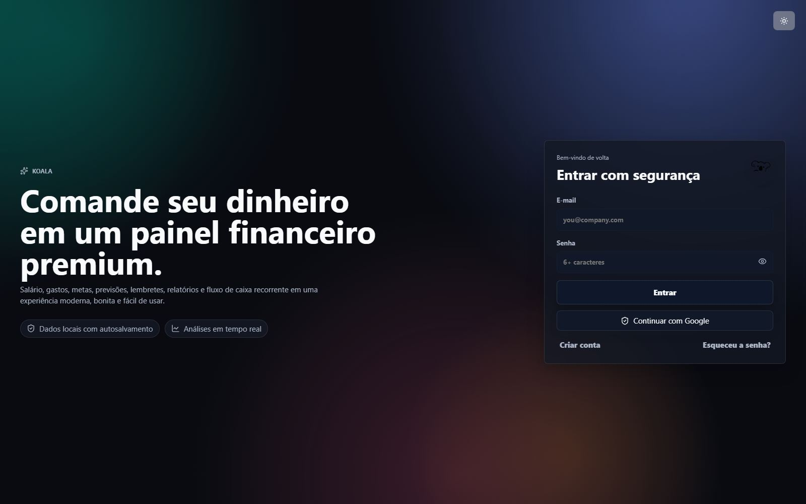

Koala

Aplicativo gratuito de gestão financeira pessoal: controle de receitas e despesas, metas, relatórios e acompanhamento de gastos em um painel só. Projeto de extensão da faculdade, feito em dupla com Guilherme dos Santos.
React, Vite, JavaScript, CSS